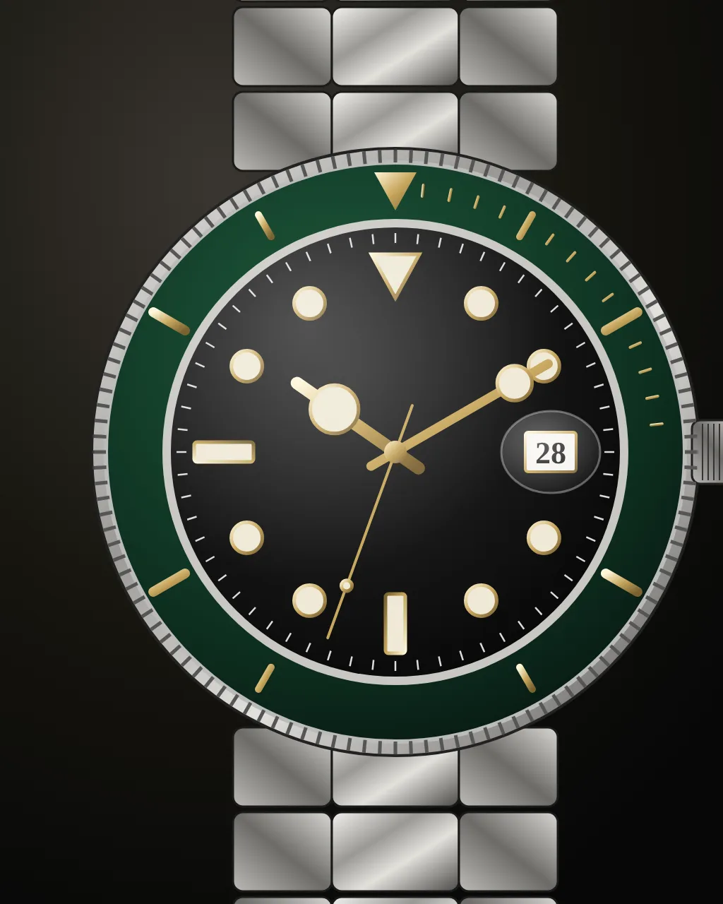

Un piccolo gioco per grandi osservatori
Ti basta un dettaglio?
8 dettagli, 3 risposte. La foto si mette a fuoco piano piano: più rispondi presto, più punti fai.
Prototipo · solo il primo round
Round 1 di 8

Di che brand è questo dettaglio?
+0
Prototipo · immagine segnaposto